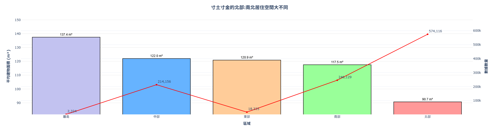
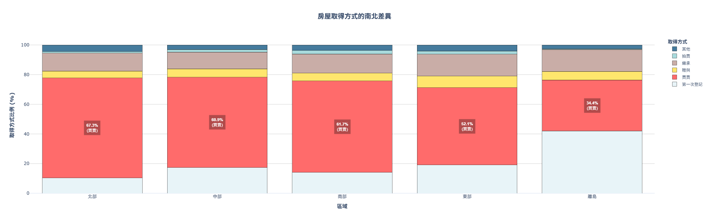
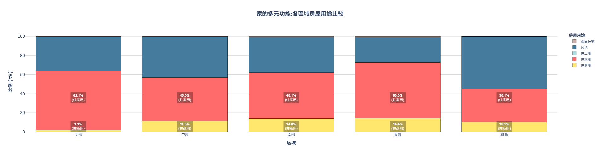
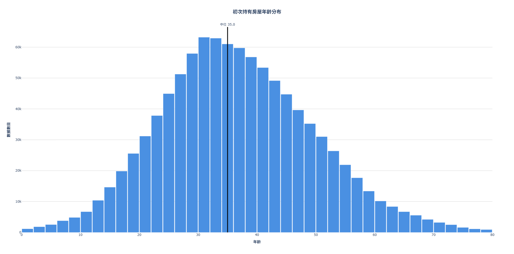
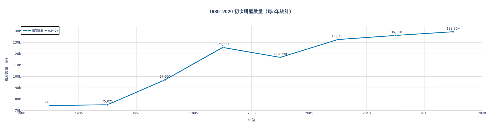
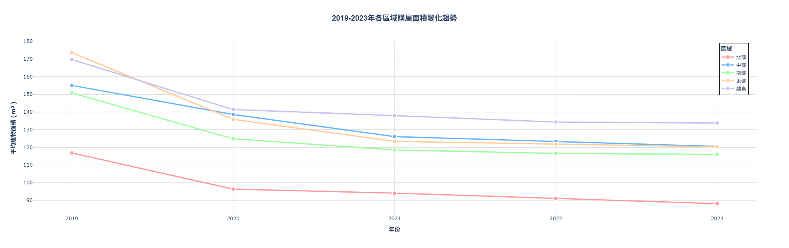
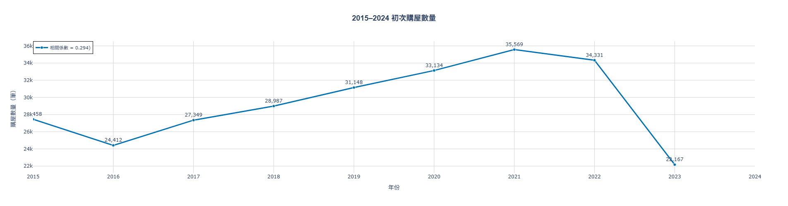

一個屋簷，一個夢：數據眼中的台灣購屋故事
資料科學敘事挑戰賽：超越預測
1 研究摘要
本研究旨在分析台灣各地區房屋特性及各地區的人們是如何根據自己的能力選擇最適合自己的房子。以內政部大數據模擬資料-屋主模擬資料當基礎，利用Python語言中的Pandas、numpy及plotly作為分析工具，將研究成果從單年成果立體化至歷年的趨勢並對政府制定房屋政策做出建議。
2 研究動機及工具使用：家的夢，藏在數據的細節裡
在台灣，大家都聽過這樣的期盼：「成家立業」。一個安穩的「家」是許多人心中夢想的基石。但當我們深入探究內政部提供的大數據時，我發現這個夢想的輪廓正隨著地點、時間與世代而悄悄改變。我們的任務不是預測房價，而是從數百萬筆冰冷的資料中，利用Python語言中的Pandas、numpy及plotly作為分析工具，拼湊出台灣家庭關於「家」的真實故事。
這些故事裡，有著年輕人對未來的憧憬、中年人為家庭的權衡，以及整個社會在時代變遷下的縮影，但數據所指遠不止於此。它揭示了我們在不同生命階段，如何做出關於「家」的關鍵抉擇。這次的調查將循著三條主要線索前進：
- 空間的謎題：南北購屋的選擇，為何有天壤之別？這背後犧牲了什麼，又換來了什麼？
- 時間的軌跡：我們在人生的哪個時間點，才終於拿到第一把鑰匙？這個時間點，又如何牽動著我們關於婚姻與家庭的藍圖？
- 市場的低語：過去五年，因環境導致房市的波動，是否正悄悄地改變我們的居住未來？
現在，請跟著我們的腳步，一起走進數據的迷宮，揭開這幅台灣購屋地圖背後，隱藏的秘密與夢想。
3 成果展現與報告撰寫
3.1 起點的抉擇 - 南北風情大不同
故事伊始，來到台灣的上空，俯瞰這片土地上最顯著的差異：南北的房屋大不同。這裡的選擇，不僅關乎預算，更反映了截然不同的生活方式與價值觀。
3.1.1 寸土寸金的北部：居住空間的地域差異

蝸居，是為了換取一個夢想？數據圖清晰地揭示了台灣的居住現實：北部，特別是都會區，購房者平均只能擁有約 91 平方公尺(約27.5坪)的空間，遠低於其他地區。與此同時，東部與離島的居民則享受著約1.3倍面積的寬敞。選擇北部，或許意味著接受較小面積的「蝸居」，以換取更多的工作機會、便捷的交通與豐富的公共資源。而從數據數量角度也可看出約半數人為了謀求發展做出了縮小居住面積的妥協。
3.1.2 住家或店家？家的另一種可能
在台灣，房屋不僅是居住的空間，也可能是互通有無的集散地，而住商用住宅便兼容「住家」及「商家」的功能。

從數據來看可以發現，北部住家用的比例62.1%，在比其他區域高的同時，住商用比例卻遠低於其他地區，僅1.9%，而其他地區的住家用與住商用比例分別約莫45%與14%。這反映了北部的都市規劃更傾向於將住宅與商業區分開，生活與工作之間的界線更為分明，且居民也認可這種生活方式；而其他地區擁有著傳統街屋「樓下開店、樓上住家」的文化。對於家庭而言，住商混合意味著額外可能的收入來源，能稍微緩解購屋的經濟壓力，能更有效的利用資源。
3.1.3 我們如何擁有家？南北市場的冷與熱
我們的第二個方向，是人們取得房屋的方式。這不僅僅是交易，更反映了地方的社會結構與人口流動。數據顯示，南北之間存在著巨大的差異。

除了空間大小，人們如何「得到」一個家，也充滿了地域色彩。數據顯示，北部地區高達 67% 的房屋是透過「買賣」取得，冠絕全台。 這意味著一個高度流動、交易頻繁的市場，需求及供給甚至可能不均衡而導致房價節節攀升。與此形成鮮明對比的是離島地區，買賣比例僅 34%，可知眾人對於離島地區的房屋需求並不高。
3.2 家的時間軸 - 何時，我們築起第一個巢？
先「安家」後「立業」是傳統價值歌頌的美德，但是在持續通膨且快節奏的生活及頻繁交易的房屋市場中，多數人只能先「工作」後「買房」。那麼人們成家的「時間壓力」，是否也更大？
3.2.1 被房價推遲的歲月：家的起點，越來越晚

從數據上分析，初次持有房屋的中位數為35 歲，而眾數約落在33-34歲之間。在這個傳統上象徵著結婚生子、穩定家業的時期，如今卻可能被沉重的房價壓力所佔據。這不僅僅是延後買房，更可能連帶影響了年輕人對於婚姻、生育的規劃。當「安居」都成為挑戰時，「樂業」的底氣又從何而來？
3.2.2 見證人口結構的改變和購屋的需求

從上圖數據可得知，在經濟飛速成長的時間段中，初次買房的數量也呈現高度正相關，顯示越來越多人都有多餘的財富實現成家的目標。而在1997年金融風暴使經濟遭受重創導致買房人數下降後，經濟雖然緩慢進步，我們推測是通膨速度超過了經濟成長，購屋數量的成長逐漸趨緩。
3.3 市場巨變帶來的影響

2020年，COVID-19疫情席捲了全球，使得多數人生活型態被迫改變，預定好的人生計劃也得重新制定，也造成經濟結構重創和轉變。從第三章的數據圖中可以看出，雖然南北部選房的總體趨勢不變，但是平均面積卻同步縮小，且隨著時間推進而持續下降。這反映了當環境受到全面影響時，對經濟面向的重創是持續性的，我們需要更多的時間去見證房屋面積的回升。

而從初次購屋數量來看疫情的影響會發現疫情初期的購屋數量依舊隨著趨勢成長，但是在2021-2023年宅經濟退燒後，台灣晶片出口大減。供過於求導致經濟負成長，反映在房市的初次購屋人數急遽下降就是最好的證明。
4 推論與討論：數據背後的故事與政策省思
4.1 房市現況核心
- 南北的抉擇：北部以機會換空間，中南部則反之，形成了兩種截然不同的安居模式。
- 時間的壓力：高房價推遲了成家的年齡，特別是在北部，家的起點被延後，可能進一步影響生育決策。
- 安居的代價：「長期持有」成為常態，家庭在生命週期變化時，換屋的彈性受限，影響了居住品質的提升。
5 創新與延伸：政策改善方向及建議
數據不僅僅是故事，更應成為政策的基石。我們的發現指向了幾個可能的政策方向：
- 精準的青年安居政策：面對區域性挑戰，北部除現有補貼外，增加平價、優質的中小坪數住宅供給，應是政策思考的核心。
- 活絡換屋市場：降低交易稅負，鼓勵家庭在不同生命階段(如：空巢期)「大換小」，釋出大坪數房屋，增加市場供給。
- 區域均衡發展：長遠來看，唯有推動區域均衡發展，讓青年在家鄉也能找到機會，才能從根本上緩解「蝸居都市」的壓力。
6 特別致謝
由衷感謝清華大學數學系東聖甯教授的鼎力協助。在研究主題確立、方法修正、圖表呈現乃至文稿潤飾方面，教授皆不吝給予寶貴的建議與指導。
7 參考資料及程式碼總集
- 社會經濟資料服務平台-內政部大數據模擬資料-屋主模擬資料(108年-112年)：
https://segis.moi.gov.tw/STATCloud/BigData
- 程式碼總集：
““”